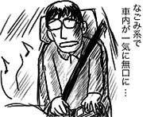
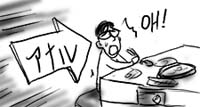
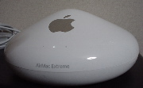
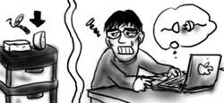

「逆充電機能」を利用し，一晩ほど電源を抜いておいた無線LANアクセスポイントをソフマップに売り払って来ました．3500円になったよ！(悪)．アクメツに殺されてしまう！
ついでに，あまり持ち歩いていないデジカメ「Pentax Optio330」も売り払い，代わりに「SONY CyberShot U-20」をゲット．財布からは一銭も出さずに，この交代劇は完了しました．言うなれば無血革命です(大げさ)．

Optio330はあまりにカメラ然としていたために，町中で撮りたいものを見つけても，気弱な僕には周りの人が「まぁあの人ったらあんなところでカメラなんて構えて」とか思っているんだろうなぁと思えて(被害妄想)，それだけで撮影する意欲も消え失せていたのです．
CyberShot Uは，蓋を開ければ1秒で起動する上に小さくて目立たないので，携帯でメールを打っているふりをして撮影できるのではないかと，淡い期待を抱いています．
別にやましいものを撮るわけでもないのに，そこまで自己弁解しないと何も行動できない自分って一体…．
思わぬところで自分と向き合ってしまって足取りも重く，そして新しいデジカメを手に入れて足取りも軽く，自分でもよくわからないズルズルサッという複雑なフットワークで帰宅しました．そろそろダメかもしれん…．
昨日のメンバ3人で再び集合し，車で神奈川方面を目指しました．
車載コンポにiPodを接続して，適当に音楽を流しつつ移動．「次は何系(の曲)かけるよ？」と聞くと「なごみ系」という返答があったので，それらしい曲をかけたのですが，「これってダウン系やん！」とつっこまれてしまいました．「なごみ系＝心を定常状態に維持する音楽」と考えると，僕にとって心の定常状態とは明らかにダウン状態なので，この2つはほとんど同義と捉えていたのですが，一般的には違ったようです(当たり前)．

そして東名高速に乗ったあたりで，事故渋滞(4)．都心では，すごい勢いで人が死んでます！
その他にも通ったほとんどの道で渋滞に巻き込まれ，その度に再スケジューリングを繰り返し，最終的に鎌倉までたどり着きました．
鶴岡八幡宮に立ち寄り，おみくじなんか引いたりして無理矢理に観光気分を詰め込みます．友人が新幹線で関西方面まで帰らないといけないので長居できなかったのですが，もう少し時間的余裕のある時にまた来てみたい気はします．
そして，帰り道では渋滞がますます混迷を極め，3km進むのに1時間半とかとんでもない事態に．余裕を持って出発したはずなのに，どんどんとタイムリミットがせまります．空いている道を行こうとして道に迷ったりもして，カプセルホテルにもう一泊以外手はないか…と最悪の算段を始めた友人でしたが，一か八かの高速道路突入が功を奏し，なんとか余裕を持って新横浜駅に到着できました．本気で危なかった！
タイムリミットがなくなった後は，車を出した友人とダラダラとだべりながら帰宅．結論としては「横浜方面，道混みすぎ．二度と来ねぇよ！」そして「俺ら全員，基本的に人間嫌いだしね」でした．一体何が．
大学時代の友人が研修でこちらに出て来ているので，同じく関東方面在住の友人と二人で都心まで迎撃に出かけました．
行きの電車では，人身事故(?)があったらしく，終点の手前でしばらく停車(1)．
合流した後は，事前に調べておいたラムしゃぶ屋に入り，生でも食せるラム肉に舌鼓を打ちました．しかし，最近は友人と会う度に羊を成敗している気がします．迷える子羊が羊を食う．これは共食いじゃろか？
美味しい食事をいただきながら，久しぶりの再会に会話も弾んでいたのですが，隣のテーブルで総務のお姉さんらしき人物が，後輩男子のエロ本属性(SMでアナル)を大声で暴露し始めたあたりで，一気に緊張が高まってきました．美味しい食べ物だけで終わっていればどんなによかっただろう！

その後，店を変えてしばらくだべって解散．
帰りの山手線では，並走する京浜東北線で人身事故があったらしく，しばらく停車(2)．京浜東北線では運行が一時ストップしているため，あちらから乗り換えて来た人で物凄い満員状態に．一気に窓ガラスがかき曇りました．
その後，乗り換えた高崎線では人身事故があったらしく，しばらく停車(3)．人死にすぎ！おまけに車内には，隣の女性を舐めるように凝視し続ける酔っ払いのおっさん(しかもフラフラ揺れる)が目の前にいて，目障りで仕方ありませんでした．
大学時代のメンツが集まると，僕のデス事を呼び寄せる能力が，一気に高まりを見せるようです．大学時代がいかにアレだったか，いまさら思い知りました．
あまりの無線不調に，ついカッとなってAirMac Extreme Base stationを購入(いきなり)．

今まで使っていた有線ルータと無線アクセスポイントを一気に撤廃し，こいつで置き換えました．清々した！(支持率低下の総理大臣ぽく)．さすがフルーツ製品だけあって，設定/管理がMacから簡単に行えるので，運用がとても楽です．
日用品や衣類などは，悩みに悩んでようやく買うのに，デジタル機器だけは即決で購入できます．デジタル豪傑．
本当どうしようもない(自分が)．
ここ数日，家の無線LANのアクセスポイントが不調で，夜のネット生活はサッパリでした，すぐにコネクション断に陥り，メールもろくに読めない状態だったので，ほとんど毎日ふて寝をしていました．
それで気付いたのですが，無線LANアクセスポイントの電源を切ってしばらく放っておくと，再度電源を入れた時にちょっとだけ接続を維持してくれるみたいです(すぐに入れ直すとダメ)．というわけで，だましだまし電源を切りながら使っていたのですが，試しに今日一日，会社に行っている間は電源を引っこ抜いておいたところ，帰って来てから3時間ほど使えました．電源断時間の長さに比例．なんだこれ．逆充電？

素直に有線で接続すればいいのですが，トラブル初日にそれを実行して，つまづいて本体をあやうく落下させそうになってしまったので，すぐにケーブルを抜いてしまいました．一旦無線に慣れてしまうと，なかなか有線には戻れないものなんだなぁ(単にヘマなだけです)．あと，電源コードと絡まりました．
本当どうしようもない(自分が)．